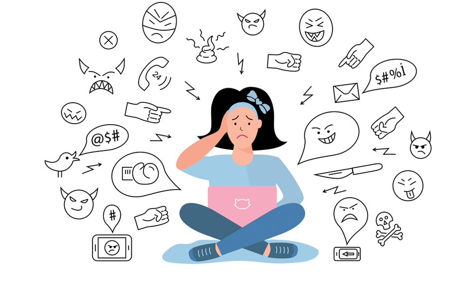

Término
Ciberbullying es un término que se utiliza para describir cuando un niño o adolescente es molestado, amenazado, acosado, humillado, avergonzado o abusado por otro niño o adolescente, a través de Internet o cualquier medio de comunicación como teléfonos móviles o tablets.
Caracterización
Se caracteriza por que el acoso se da entre dos iguales, en este caso, menores. Es importante distinguirlo, ya que existen otras prácticas en la que se involucran adultos y que se denominan simplemente ciberacoso o acoso cibernético, con las consecuencias legales que tienen los actos de un mayor de edad en contra de un menor.
Forma en la que se presenta
El Ciberbullying no es algo que ocurra una sola vez y además se presenta de distintas formas, desde insultos, discriminación o burla sobre características físicas, forma de vestir, gustos, hacer pública información o fotografías que avergüenzan a la víctima, robo de identidad y suplantación, hasta amenazas de daño físico y otros cargos que pueden ser tipificados como delincuencia juvenil.